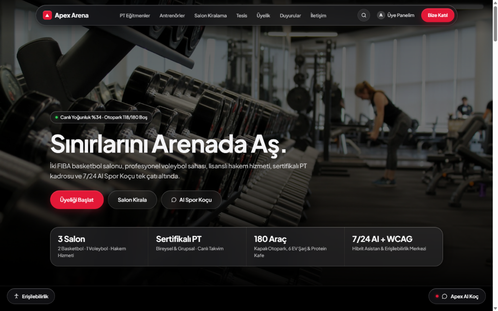
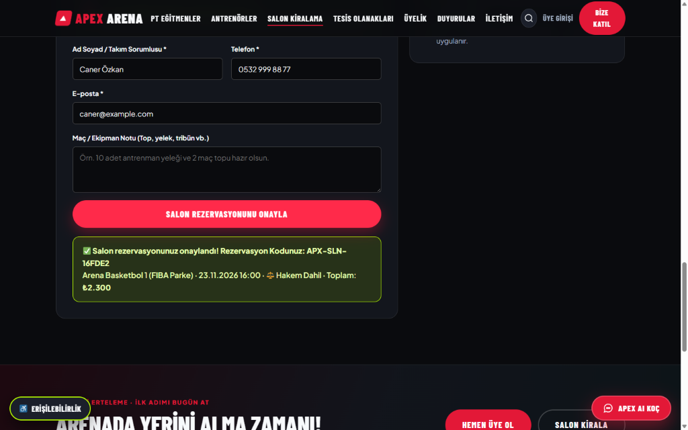
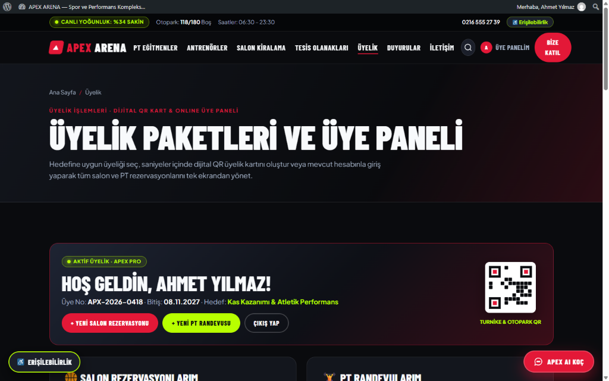
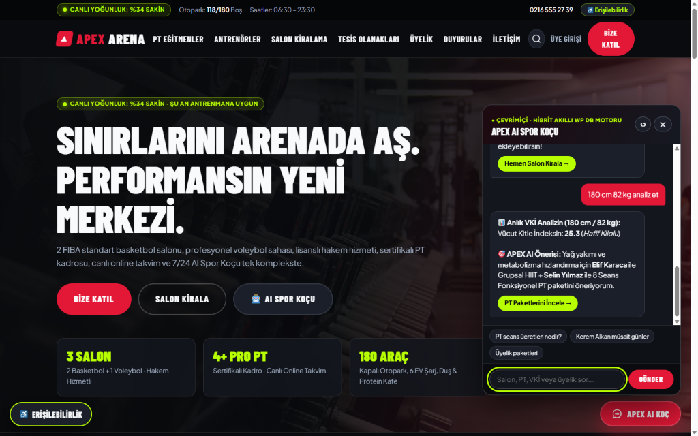
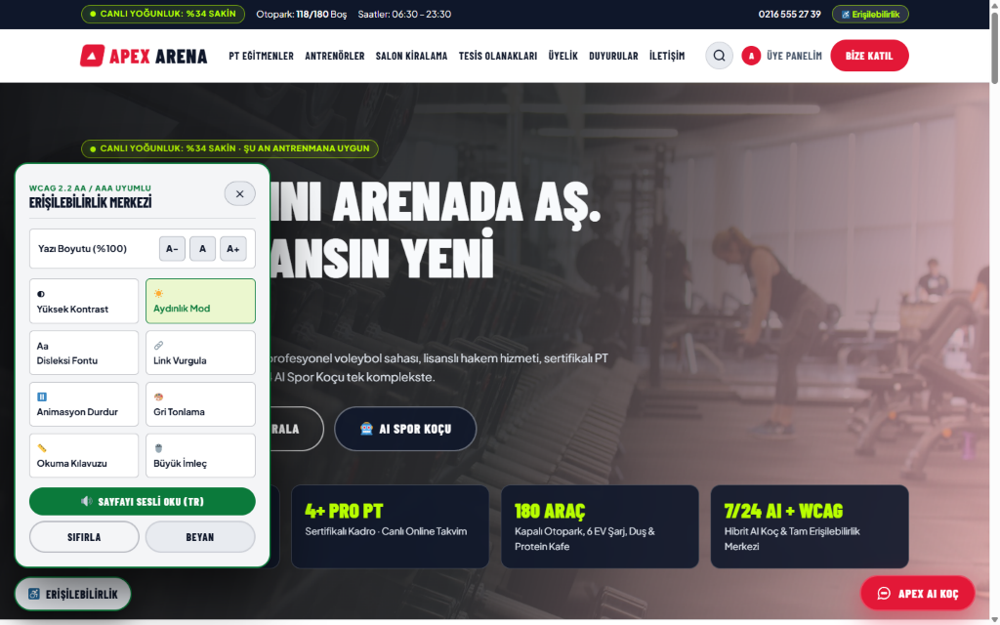
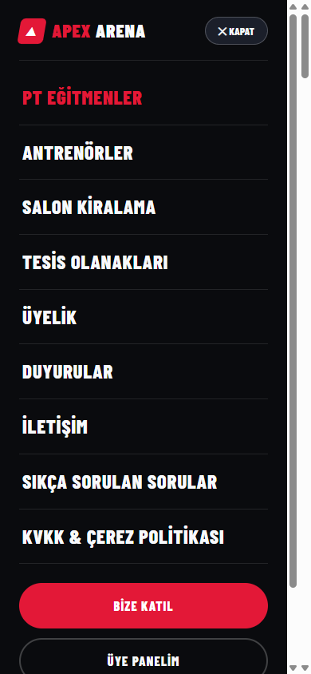
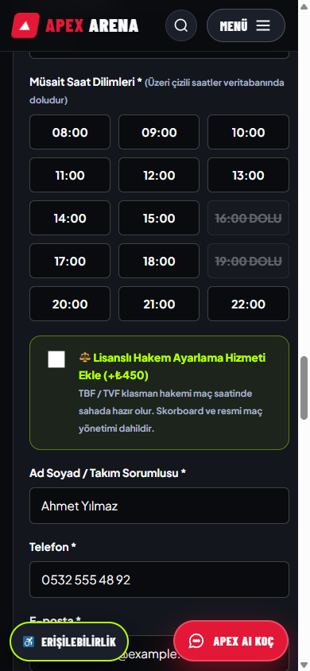

1. Proje Özeti ve Değerlendirme Kriterleri Karşılama Tablosu (100 Puan)
Bu proje, spor sitesi değerlendirme yönergesindeki tüm belge ve yazılım kriterlerini %100 eksiksiz karşılayacak şekilde sıfırdan geliştirilmiştir. Harici ücretli veya bozulabilecek eklenti bağımlılığı olmadan tüm rezervasyon, üyelik, erişilebilirlik, KVKK/çerez ve AI chatbot modülleri doğrudan apex-arena özel WordPress temasına entegre edilmiştir.
| Değerlendirme Kriteri | Puan | Sistemdeki Karşılığı & Dosya / URL | Durum |
|---|---|---|---|
| WordPress Klasörü | 2,5 | C:\xampp\htdocs\spor_kompleksi\wordpress\ | HAZIR |
| Database Dosyası (.sql) | 2,5 | teslim_belgeleri/spor_kompleksi_wp.sql (Tüm WP + 5 özel tablo) | HAZIR |
| WordPress Dışarı Aktar (.xml) | 5 | teslim_belgeleri/apex-arena-wordpress-export.xml (40 WXR öğesi) | HAZIR |
| Sistem Kullanım Kitapçığı | 15 | Bu doküman (Sistem_Kullanim_Kitapcigi.html & .md) | HAZIR |
| PT Eğitmenler (Bireysel, Grupsal, Paketler, Ücretler, Detay/Günler, Antrenör Seçimi, Online Randevu) | 30 | /pt-egitmenler/ — 6 PT Paketi, haftalık ders tablosu, antrenör kart seçimi ve canlı MySQL randevu | TAMAMLANDI |
| Antrenör (Kim, Fotoğraf, Uzmanlık, Özgeçmiş, Sertifika/Belgeler, Online Takvim) | 5 | /antrenorler/ ve /antrenor/{slug}/ — 4 sertifikalı antrenör, belge doğrulama modalı, canlı takvim | TAMAMLANDI |
| Salon ve Kiralama (2 Basketbol + 1 Voleybol + Hakem Ayarlama, Fotoğraf, Rezervasyon) | 5 | /salon-kiralama/ — Lightbox galeri, +₺450 hakem opsiyonu, çakışma korumalı canlı saat slotları | TAMAMLANDI |
| Tesis Olanakları (Soyunma Odası/Duş, Otopark, Kafe) | 5 | /tesis-olanaklari/ — 240 dolap/duş/sauna, canlı doluluklu 180 araçlık otopark + EV şarj, makro hesaplı kafe menüsü | TAMAMLANDI |
| Üyelik İşlemleri | 10 | /uyelik/ — Aylık/Yıllık planlar, online kayıt/giriş, Dijital QR Kartlı Üye Paneli, rezervasyon iptali, VKİ hesaplayıcı | TAMAMLANDI |
| Erişilebilirlik İşlemleri (WCAG 2.2 AA) | 10 | 10 özellikli yüzen Erişilebilirlik Merkezi (Font, Yüksek Kontrast, Aydınlık Mod, Disleksi Lexend, Sesli Okuma vb.) + Beyan sayfası | TAMAMLANDI |
| Envato Market / Git Hesabı | 10 | apex-arena-git-repo/ (GitHub hazır depo) + apex-arena-envato-theme.zip + screenshot.png + .pot | HAZIR |
| Ekstralar: Hibrit AI Chatbot, KVKK/Çerez Politikası, Duyurular | +Fark | 7/24 Hibrit AI Spor Koçu (Gemini/OpenAI + Offline WP DB), Çerez Tercih Banner & Modalı, KVKK/Gizlilik/Sözleşme, Duyurular | AKTİF |
2. Sistem Kurulum ve Taşıma Rehberi (XAMPP / Localhost)
2.1. Hızlı Kurulum Adımları
- XAMPP Kontrol Panelinden Apache ve MySQL servislerini başlatın.
- Teslim edilen
wordpressklasörünüC:\xampp\htdocs\spor_kompleksi\wordpress\dizinine yerleştirin. - phpMyAdmin (
http://localhost/phpmyadmin) üzerindenutf8mb4_unicode_cikarakter setiylespor_kompleksi_wpveritabanını oluşturun veteslim_belgeleri/spor_kompleksi_wp.sqldosyasını İçe Aktar (Import) ile yükleyin. - Tarayıcıdan
http://localhost/spor_kompleksi/wordpress/adresini açın.
2.2. Alternatif Kurulum (WXR XML + Tema ZIP)
Mevcut temiz bir WordPress kurulumuna aktarmak için: Görünüm → Temalar → Yeni Ekle → Tema Yükle menüsünden apex-arena-envato-theme.zip paketini yükleyip etkinleştirin; ardından Araçlar → İçe Aktar → WordPress üzerinden apex-arena-wordpress-export.xml dosyasını içe aktarın.
• WordPress Yönetici (WP Admin):
http://localhost/spor_kompleksi/wordpress/wp-admin/ → Kullanıcı: root | Şifre: korkut2006• Hazır Demo Üye (Üye Paneli & QR Kart):
/uyelik/#giris → Kullanıcı: uye_demo | Şifre: ApexUye2026! *(Tek tıkla "DEMO ÜYE DOLDUR" butonu mevcuttur.)*
3. Arayüz Ekran Görüntüleri ve Modül Kullanım Kılavuzu
3.1. Ana Sayfa ve MACFit Esintili Koyu Atletik Tasarım
Ana sayfa; üstte canlı tesis yoğunluğu (%34 Sakin) ve boş otopark bilgisini gösteren durum şeridi, yapışkan (sticky) navigasyon, tam ekran koyu atletik hero, KPI özet kartları, 3 profesyonel maç salonu, bireysel/grupsal filtreli PT paketleri, sertifikalı antrenör vitrini, tesis olanakları, üyelik paketleri ve güncel salon duyurularından oluşur.

3.2. Salon ve Kiralama Sistemi (2 Basketbol + 1 Voleybol + Hakem Hizmeti)
/salon-kiralama/ sayfasında Arena Basketbol 1 (FIBA Parke — ₺1.850/saat), Arena Basketbol 2 (Performans — ₺1.550/saat) ve Arena Voleybol Pro (CEV Taraflex — ₺1.450/saat) salonları teknik özellikleri ve büyütülebilir fotoğraf lightbox galerisiyle listelenir.
- Canlı Çakışma Koruması: Seçilen salon ve tarih için REST API (
/wp-json/apex/v1/availability) MySQL veritabanını sorgular; dolu saatler otomatik olarak DOLU etiketiyle kilitlenir. - Lisanslı Hakem Ayarlama Hizmeti: Formdaki hakem onay kutusu işaretlendiğinde TBF/TVF hakem bedeli (+₺450) sağdaki özet karta anlık yansıtılır ve veritabanına
needs_referee = 1olarak kaydedilir. - Onay sonrası sistem benzersiz bir rezervasyon kodu (örn.
APX-SLN-16FDE2) üretir ve ilgili saati anında kilitler.

3.3. PT Eğitmenler & Sertifikalı Antrenör Kadrosu
- PT Eğitmenler (
/pt-egitmenler/): Bireysel PT ve Grupsal Antrenman karşılaştırması, sekmeli 6 paket (seans sayısı, seans başı ücret, toplam ücret, kapsam, günler), haftalık ders programı tablosu, antrenör kart seçimi ve canlı randevu formu yer alır. - Antrenörler (
/antrenorler/&/antrenor/{slug}/): 4 uzman antrenörün (Kerem Alkan, Selin Yılmaz, Mert Demir, Elif Karaca) fotoğrafları, özgeçmişleri, tıklanınca doğrulama penceresi açılan uluslararası sertifikaları (NSCA-CSCS, TBF, TVF, Balanced Body, CrossFit L2) ve 7 günlük canlı online müsaitlik takvimleri bulunur.
3.4. Tesis Olanakları & Üyelik İşlemleri (Dijital QR Kartlı Panel)
- Tesis Olanakları (
/tesis-olanaklari/): 240 RFID akıllı dolaplı Soyunma Odası & Yağmur Duş & Fin Saunası, anlık doluluk çubuklu 180 araçlık Kapalı Otopark + 6 EV Şarj Ünitesi ve kategori filtreli, kalori/protein makrolu Apex Protein Kafe Menüsü. - Üyelik İşlemleri (
/uyelik/): Aylık/Yıllık (%20 indirimli) fiyat geçişli 3 paket (Classic, Pro, Elite + PT), KVKK & sözleşme onaylı online kayıt formu, Üye Girişi ve giriş yapan üyeler için Dijital Turnike/Otopark QR Kartı, aktif salon/PT rezervasyonlarını tek tıkla iptal etme ve VKİ/Kalori hesaplayıcı.

4. Hibrit AI Spor Koçu (Yapay Zeka Chatbot) Kullanımı ve API Ayarları
Sağ alt köşedeki APEX AI KOÇ butonu her sayfada erişilebilirdir ve iki katmanlı Hibrit Mimari ile çalışır:
- Canlı LLM + RAG Modu: WP Yönetim Paneli → APEX ARENA → AI & Ayarlar ekranından Google Gemini veya OpenAI API anahtarı girildiğinde, sistem canlı WordPress veritabanındaki tüm salonları, antrenörleri, fiyatları ve dolulukları sistem bağlamına ekleyerek gerçek yapay zeka yanıtları üretir.
- Anahtarsız / Offline Yerel Hibrit Motor (Varsayılan Güvenli Mod): API anahtarı girilmediğinde veya internet kesildiğinde chatbot asla hata vermez; doğrudan WordPress MySQL veritabanından canlı boş salon saatlerini, hakem ücretlerini, PT paketlerini ve kullanıcının yazdığı boy/kilo verisinden (örn.
180 cm 82 kg analiz et) anlık VKİ ve antrenör tavsiyesini hesaplar.

5. WCAG 2.2 AA Erişilebilirlik Merkezi ve KVKK / Çerez Yönetimi
Sol alt köşedeki ♿ ERİŞİLEBİLİRLİK butonu ile açılan panel tüm kullanıcı tercihlerini tarayıcıda (localStorage) kalıcı olarak saklar:
- Yazı Boyutu Ölçekleme (%85 – %145), Yüksek Kontrast (WCAG AAA), Aydınlık Okuma Modu, Disleksi Dostu Lexend Yazı Tipi, Bağlantıları Vurgula, Animasyonları Durdur, Gri Tonlama, Fare Takipli Okuma Kılavuzu, Büyük İmleç ve Web Speech API Türkçe Sesli Okuma.
- KVKK & Çerez Uyumu: İlk ziyarette açılan Çerez Bildirim Şeridi ve footer’dan her zaman yeniden açılabilen granüler Çerez Tercihleri Modalı (Zorunlu, Tercih/Erişilebilirlik, Analitik, Kampanya) ile
/cerez-politikasi/,/kvkk-aydinlatma-metni/,/gizlilik-politikasi/ve/uyelik-sozlesmesi/sayfaları tam kapsamlıdır.

6. Mobil Uyumluluk (Responsive Doğrulama — 390px)
Tema 1440px, 1200px, 960px, 768px ve 390px kırılımlarında sıfır yatay taşma ile test edilmiştir. Mobilde tam ekran navigasyon çekmecesi, tek sütunlu kart/form dizilimi ve 44px+ dokunma hedefleri sağlanmıştır.


7. WordPress Yönetim Paneli, Veritabanı ve REST API Mimarisi
Yönetici hesabıyla giriş yaptığınızda sol menüde yer alan APEX ARENA sekmesi üzerinden; Genel İstatistikler, Salon Rezervasyonları (Onayla / İptal Et + Hakem rozetleri), PT Randevuları, Üyelik Başvuruları, İletişim Mesajları ve AI Chatbot API ayarları yönetilebilir.
| Özel MySQL Tablosu | Kullanım Amacı |
|---|---|
apex_apex_court_bookings | Basketbol (2) ve Voleybol (1) salon rezervasyonları, saat çakışma kontrolü ve hakem opsiyonu |
apex_apex_pt_appointments | Bireysel/Grupsal PT eğitmen randevuları ve canlı takvim doluluğu |
apex_apex_membership_applications | Üyelik kayıtları, paket seçimleri, KVKK/sözleşme onay kayıtları ve QR üye kodları |
apex_apex_chatbot_logs | APEX AI Spor Koçu sohbet kayıtları ve kullanılan yapay zeka modu |
apex_apex_contact_messages | İletişim sayfasından gelen KVKK onaylı ziyaretçi mesajları |
8. GitHub & Envato Market Dağıtım Talimatı
apex-arena-git-repo/ klasörü Envato/ThemeForest dosya yapısına uygun şekilde (style.css, theme.json, screenshot.png, readme.txt, languages/apex-arena.pot, LICENSE, CHANGELOG.md) hazırlanmış ve Git commit geçmişiyle başlatılmıştır. Kendi GitHub hesabınıza yüklemek için:
cd C:\xampp\htdocs\spor_kompleksi\apex-arena-git-repo git remote add origin https://github.com/KULLANICI_ADIN/apex-arena-wordpress-theme.git git push -u origin main